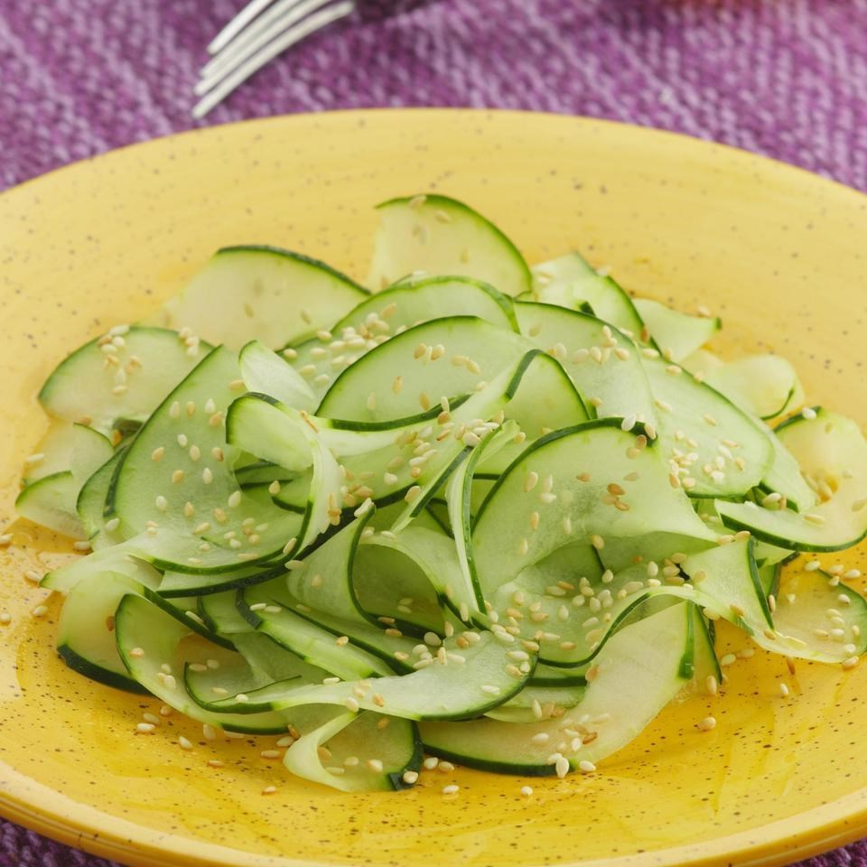

Japanese Cucumber Salad
Ingredients
- 2 medium cucumbers, or 1 large English cucumber
- ¼ cup rice vinegar
- 1 teaspoon sugar
- ¼ teaspoon salt
- 2 tablespoons sesame seeds, toasted (see Tip)
Preparations
- Peel cucumbers to leave alternating green stripes. Slice the cucumbers in half lengthwise; scrape the seeds out with a spoon. Using a food processor or sharp knife, cut into very thin slices. Place in a double
layer of paper towel and squeeze gently to remove any excess moisture.
- Combine vinegar, sugar and salt in a medium bowl, stirring to dissolve. Add the cucumbers
and sesame seeds; toss well to combine. Serve immediately.
- Tip: To toast sesame seeds, heat a small dry skillet over low heat. Add sesame seeds and stir constantly until golden and fragrant, about 2 minutes. Transfer to a small bowl and let cool.